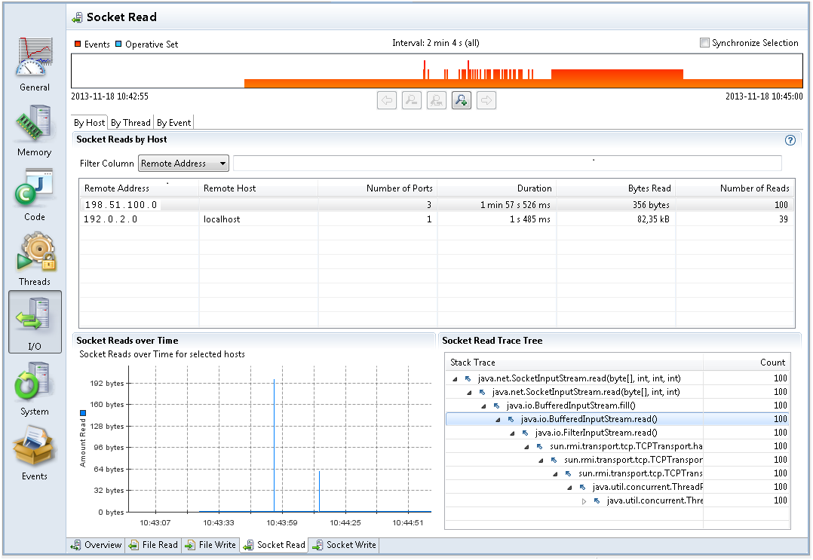

When a Java Application spends a lot of time either in Socket Read, Socket Write, File Read or File Write, then I/O or networking may be the bottleneck. To diagnose I/O issues in applications, take a look at Socket Read tab under the I/O group, as shown in Figure 4-5.
Figure 4-5 I/O Performance Issues - Socket Read Tab
Figure 4-5 shows that the application had 100 reads from the remote address 198.51.100.0. The total number of bytes read is 356 bytes and the total time spent waiting is 1 min 57 s. Select By Event tab at the left top corner and look at each event to analyze the time spent and data read.
File or networking I/O issues are diagnosed in a similar fashion. Look at the files read to or written to the most, then see each file read/write and time spent on I/O.
All the tabs in I/O by default list events with a duration longer than 20 ms. When starting a flight recording, you can lower the File I/O Threshold or the Socket I/O Threshold to gather more data, potentially with a higher performance impact.